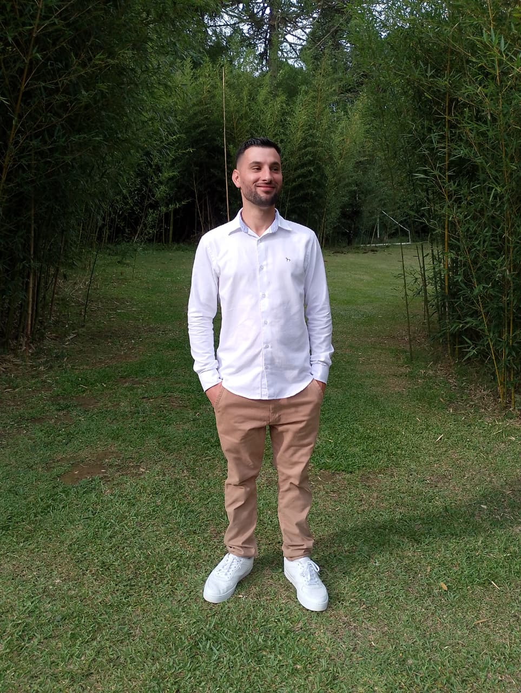

Sobre mim
Tenho 29 anos e nasci e fui criado em Curitiba, no Paraná.
Meu interesse por programação e design 3D começou por causa da franquia de jogos GTA. O que mais me chamava atenção era a possibilidade de modificar o jogo com diferentes arquivos e conteúdos criados pela comunidade. Eu gostava especialmente de personalizar o jogo com um estilo mais brasileiro e, muitas vezes, passava mais tempo modificando o jogo do que realmente jogando.
Durante esse processo, comecei a ficar curioso sobre como tudo funcionava. Gostava de explorar os arquivos do jogo e tentar entender o que cada um fazia. Foi nesse momento que surgiu meu interesse em aprender mais sobre programação e sobre o funcionamento dos códigos por trás das modificações.
Por diversão, também comecei a aprender um pouco sobre modelagem 3D utilizando o ZModeler, uma ferramenta bastante utilizada para criar e editar modelos para jogos da série GTA. Essa experiência despertou ainda mais meu interesse pela área de tecnologia.
Posteriormente, fiz um curso de programação web para começar a entrar nesse universo e gostei bastante da área. Depois disso, iniciei o curso de Análise e Desenvolvimento de Sistemas, no qual atualmente estou com cerca de 40% da graduação concluída.
Atualmente possuo conhecimentos básicos em Python, HTML, CSS e JavaScript. Também tenho familiaridade com ferramentas como Figma e GitHub. Meu nível de inglês ainda é básico, principalmente para leitura, mas pretendo continuar evoluindo nessa habilidade.
Nos meus momentos de lazer gosto de jogar no PC e tenho grande interesse por carros antigos.